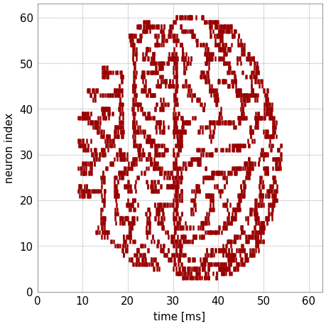

BrainScaleS-2 on-chip plasticity experiment¶
In addition to the analog neural network core, BrainScaleS-2 features two embedded general-purpose processors, called PPUs (Plasticity Processing Units). They can be used for experiment control and alterations of configuration during the run-time of an experiment. This example makes use of this feature by show-casing synaptic plasticity.
%matplotlib inline
from os.path import join
import numpy as np
import matplotlib.pyplot as plt
import pynn_brainscales.brainscales2 as pynn
from dlens_vx_v3 import hal, lola, halco, sta
We want to show how the PPUs can be used to rate-code an image in the activity of neurons (our canvas will be the activity of the neurons over time). This is done by switching synapses on and off using a predefined data sequence. Each PPU has 16kiB on-chip memory. For a quadratic image to fit, it is therefore limited to 64x64 pixels. For simplicity, only one of the two PPUs is used.
For loading and converting an image, some _static.common.helpers are required:
def read_image(path: str) -> np.array:
"""
Read image from file and scale it to the weight range.
:param path: Path to image file
:return: Image data as numpy array normalised to hardware weight range
"""
image = np.asarray(plt.imread(path))
# Scale to weight range [0, 63)
image = image / image.max() * hal.SynapseWeightQuad.Value.max
return image
def image_to_memory_block(image: np.array) -> hal.PPUMemoryBlock:
"""
Convert image to memory region.
:param image: Image data to convert.
:return: Converted image data
"""
image_h = 64
image_w = 64
if (image.shape != (image_h, image_w)):
raise RuntimeError("Image shape is required to be {}x{} pixels."
.format(image_h, image_w))
# A word in memory is four bytes
bytes_in_word = 4
bits_in_byte = 8
# create memory block
image_config = hal.PPUMemoryBlock(
halco.PPUMemoryBlockSize(image_h * image_w // bytes_in_word))
# construct words by placing bytes
# in addition, we flip the order of pixels to get a upwards-facing image
# when plotting the time on the x-axis
words = image_config.words
for i in range(image_config.size()):
for j in range(bytes_in_word):
index = i * bytes_in_word + j
image_value = int(image[image_h - 1 - (index % image_h)][
index // image_w]) << ((bytes_in_word - 1 - j) * bits_in_byte)
words[i] = hal.PPUMemoryWord(
hal.PPUMemoryWord.Value(int(words[i].value) | image_value))
image_config.words = words
return image_config
Controlling the on-chip plasticity processor¶
Later, we will define the network topology using the pyNN interface. Loading the PPU program onto the chip and starting the PPU will be injected as a black-box sequence of instructions:
def load_and_start_plasticity_kernel(
binary_path: str,
ppu: halco.PPUOnDLS,
image: np.array,
wait_duration: int) -> sta.PlaybackProgramBuilder:
"""
Load the plasticity kernel and trigger its execution.
:param binary_path: Path to the unstripped (*.bin) program to be loaded
:param ppu: PPU the program is started on.
:param image: Image data.
:param wait_duration: Wait duration between weight changes.
:return: PlaybackProgramBuilder with instructions for loading a
plasticity kernel and triggering its execution.
"""
builder = sta.PlaybackProgramBuilder()
ppu_control_reg_run = hal.PPUControlRegister()
ppu_control_reg_run.inhibit_reset = True
ppu_control_reg_reset = hal.PPUControlRegister()
ppu_control_reg_reset.inhibit_reset = False
program_file = lola.PPUElfFile(binary_path)
program = program_file.read_program()
program_on_ppu = halco.PPUMemoryBlockOnPPU(
halco.PPUMemoryWordOnPPU(0),
halco.PPUMemoryWordOnPPU(program.size() - 1)
)
program_on_dls = halco.PPUMemoryBlockOnDLS(program_on_ppu, ppu)
# Ensure PPU is in reset state
builder.write(ppu.toPPUControlRegisterOnDLS(), ppu_control_reg_reset)
symbols = program_file.read_symbols()
# Manually initialize memory where symbols will lie, issue #3477
for _name, symbol in symbols.items():
value = hal.PPUMemoryBlock(symbol.coordinate.toPPUMemoryBlockSize())
symbol_on_dls = halco.PPUMemoryBlockOnDLS(symbol.coordinate, ppu)
builder.write(symbol_on_dls, value)
# Write image data
image_symbol = symbols["image"]
image_config = image_to_memory_block(image)
image_symbol_on_dls = \
halco.PPUMemoryBlockOnDLS(image_symbol.coordinate, ppu)
builder.write(image_symbol_on_dls, image_config)
# Write wait duration
wait_duration_symbol = symbols["wait_duration"]
wait_duration_config = \
hal.PPUMemoryWord(hal.PPUMemoryWord.Value(wait_duration))
wait_duration_symbol_on_dls = \
halco.PPUMemoryWordOnDLS(wait_duration_symbol.coordinate.toMin(), ppu)
builder.write(wait_duration_symbol_on_dls, wait_duration_config)
# Write PPU program
builder.write(program_on_dls, program)
# Set PPU to run state, start execution
builder.write(ppu.toPPUControlRegisterOnDLS(), ppu_control_reg_run)
# Block until writes completed
builder.block_until(halco.BarrierOnFPGA(), hal.Barrier.omnibus)
return builder
For our experiment, we first load an image to be rate-encoded later.

# Read image into 2d numpy array
image = read_image(join("_static", "tutorial", "visions.png"))
Furthermore, we set some environment variables for our microscheduler:
from _static.common.helpers import setup_hardware_client
setup_hardware_client()
Next, the instructions for loading and starting the PPU program and transferring the original image data are generated.
builder = load_and_start_plasticity_kernel(
join("_static", "tutorial", "plasticity_kernel.bin"),
halco.PPUOnDLS.top,
image,
1000 * 250) # 1 ms
The plasticity kernel¶
We use a pre-compiled program with the following underlying source code.
The image data is transferred into a global object image.
Within the entry-point start(), the program writes synapse weight values
row-wise via set_row_via_vector(weight_row, row, dls_weight_base).
After each write, a predefined constant time wait_duration is waited before
the next row of the image is written.
Over time, this leads to each row of the image being present and imprinting itself
onto the neurons’ firing rate.
#include "libnux/vx/time.h"
#include "libnux/vx/vector.h"
#include <array>
#include <cstdint>
constexpr static size_t image_h = 64;
constexpr static size_t image_w = 64;
/**
* Image data to be set from outside.
*/
uint8_t volatile image[image_h][image_w];
/**
* Wait duration between weight changes [PPU cycles].
*/
uint32_t volatile wait_duration;
constexpr static size_t row = 1;
int start()
{
for (size_t h = 0; h < image_h; ++h) {
// get current time
libnux::vx::time_base_t const before = libnux::vx::now();
// load new vertical line of image
libnux::vx::vector_row_t weight_row;
for (size_t w = 0; w < image_w; ++w) {
weight_row[w] = image[h][w];
}
// alter weights in synapse memory
libnux::vx::set_row_via_vector(weight_row, row, libnux::vx::dls_weight_base);
// wait until wait_duration elapsed
while (libnux::vx::now() < (before + static_cast<libnux::vx::time_base_t>(wait_duration))) {
}
}
return 42;
}
We inject the PPU start directly before the real-time execution in order to align starting the PPU with the experiment start.
injections = pynn.InjectedConfiguration()
injections.pre_realtime = builder
The experiment¶
For this simple binary on-off plasticity, we don’t need the full-fledged capabilities of the neurons and therefore configure them to bypass-mode, where every incoming spike elicits an output spike.
pynn.setup(enable_neuron_bypass=True, injected_config=injections)
Our network uses a single-layer feed-forward structure. External Poisson stimulus is generated with a constant rate. We use multiple sources for decorrelation of the neurons’ spikes in order to prevent congestion effects due to the neuron bypass mode.
bg_props = dict(
start=0, # ms
rate=4000, # Hz
duration=64 # ms
)
external_input = pynn.Population(64, pynn.cells.SpikeSourcePoisson(**bg_props))
The target population consists of 64 neurons, spikes are recorded.
neurons = pynn.Population(64, pynn.cells.HXNeuron())
neurons.record(["spikes"])
Since the external stimulus population’s size matches the internal population’s size, a on-to-one connector is used as projection. Initially the weight is set to zero, the PPU will alter it during the experiment.
synapse = pynn.standardmodels.synapses.StaticSynapse(weight=0)
pynn.Projection(external_input,
neurons,
pynn.OneToOneConnector(),
synapse_type=synapse)
We run the experiment for 64 ms, during which we expect a weight change every ms leading to all image columns being present as weights for this duration one after the other.
pynn.run(64) # ms
Last, the recorded spike-trains are visualized.
spikes = neurons.get_data("spikes").segments[0]
spiketrains = []
for spiketrain in spikes.spiketrains:
spiketrains.append(spiketrain.base)
fig = plt.gcf()
fig.set_size_inches(4, 4)
plt.eventplot(spiketrains, color='#990000')
plt.xlim(0,64)
plt.ylim(0,63)
plt.xlabel("time [ms]")
plt.ylabel("neuron index")
fig.show()
We see a replicated version of the original image encoded in the time evolution of the neurons’ firing rates.
{kind=link}